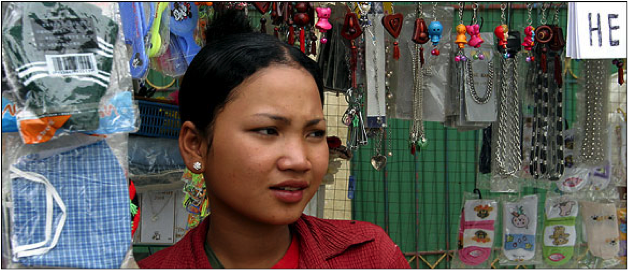

Hear Srey Rath's Story
Story from Half the Sky by Nicholas D. Kristof and Sheryl WuDunn
When I was fifteen years old, my family ran out of money. To support them and help pay bills, I decided to shift from Cambodia to Thailand to work as a dishwasher for two months. Initially, my parents feared for my safety, but I reassured them by arranging to travel with four other girls who had been promised jobs in the same Thai restaurant. As we ventured into Thailand, the job agent handed us off to gangsters who took us to Kuala Lumpur. We were forced into a karaoke lounge that operated as a brothel and were told that “the boss” had paid a lot of money for us so we were indebted to him and only after we paid him off could we go home. I was forced to have sex with customers and if I refused, I was beaten and raped by the gangsters. As I continued to resist, they forced me to take pills that made me lethargic, happy, and compliant for an hour.
We were forced to work in the brothel seven days a week, fifteen hours a day. We were kept naked to make it more difficult for us to run away, couldn’t ask customers to use condoms, were never allowed on the streets, were never paid for our work, and were given inadequate amounts of food to prevent us from gaining weight. The one time I was able to escape, I stepped into a police station to attempt to report my situation and was immediately arrested for illegal immigration. After spending a year in prison, I was once again sold to a trafficker who sold me to a Thai brothel.
Two months later, I was able to escape and make my way back to Cambodia. With the help of American Assistance for Cambodia, I was given enough money to start my own street-side business. Over time, I was able to support the rest of my family and provide my son with a proper education.
I am sharing this story with you because I want to show you that despite my history, I was able to become an independent woman supporting not only myself, but also my family. Don’t be afraid to speak up and share your story because opportunities will come your way and you will be able to start a fresh life.